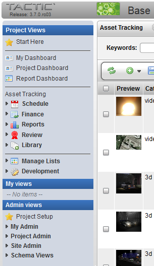
Description
The TACTIC sidebar is the main menu system for navigating through the views of all TACTIC search types. The access rules applied to a specific account determine the contents of the sidebar as well as which views and search types are displayed when a user is logged in.
The items in the sidebar provide links to existing views of the different search types within a project. These views are built by your organization’s production manager based on a selection of columns (properties), layouts (order and column width) and a search. If a search view is available, it provides a dynamic report based on the definition of the search.
Users at different levels can configure the sidebar to include only those views they need, or to include views that manage items and their relationships. For example, a user may want to set up a view where only the name, code and description of their own "storyboards" as in the view. Or, the user may set up a view where, for example, only those storyboards with a name containing the word "episode" and where child tasks have a status of "review" are in the view.
The sidebar is divided into three different categories, "Project Views", "My Views" and "Admin Views".
Project Views and My Views

The Project Views provides a way to save project wide views that everyone across the entire project would want to see. It also has a manageable list of custom user views.
The Project Views can be defined by the person in the role of the project manager. Views can also be hidden from specific user groups.
My View contains a list of links to views that were created by the login user themselves. These usually are created by the user to cater to their own personal work flow.
Admin Views
Admin Views displays the project schema and the TACTIC system and administration schemas. Access to the Admin Views section of the sidebar is generally reserved for admin level users.
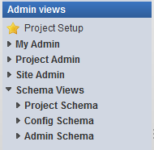
Project Setup - After initial creation of the project, this view contains the tools to setup the project: Create the Schema, Create Workflow, Manage the Side Bar.
My Admin - My Admin holds views that will allow the users to manage My Views and My Preferences.

Manage My Views | Edits the views saved in the "My Views" section. |
My Preference | Preferences include: Debug, Web Client Logging Level, Color Palette, Language, Quick Text for Note Sheet Thumbnail Size |
Project Admin - Project specific views to manage the Project Workflow, Schema, Side Bar, Config Views, Search Types, Naming, Triggers.
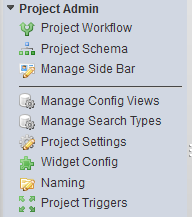
Project Workflow | Workflow Editor for creating and editing processes and task status pipeline. |
Project Schema | Schema Editor for creating and editing types and relationship connections. |
Manage Side Bar | Edit the links and folders in the side bar. |
Manager Config Views | Edit the asset view for each type. |
Manage Search Types | Edit the columns for each type. |
Project Settings | Set project settings such as use_icon_separation. |
Widget Config | Look up and edit widget configuration by category, type, view name or key words in configuration. |
Naming | Edit the automatic file naming and directory naming for checkin’s. |
Project Triggers | Edit the triggers by event, process, class name, script path, description, mode. |
Site Admin - Site Administrator view to manage the Project, Templates, Types, Users, Groups, Users in Groups, Notifications, Schema, Pipelines, Snapshot, Triggers, Client Triggers, Milestones, Exception Log, Debug Log, Widget Settings, System Info, System Config

Projects | Edit the project info: preview, category, title, is_template, color scheme palette |
Template Projects | Edit the project info for projects marked as template projects. |
Project Types | Edit the project type info: dir naming cls, file naming cls, node naming cls, sObject naming cls, repo handler cls |
Users | Edit the list of TACTIC users: preview, first name, last name, email, licence type |
Groups | Edit the list of TACTIC groups: add group, users, description, global rules, access rules |
Users in Groups | Drag and drop interface to assign users to one or more groups. |
Notifications | Email notification configuration: email test, event, description, subject, message, group, rules, process, mail to, |
Schema | Edit schema configuration, schema relationship connections. |
Pipelines | Edit workflow pipelines: color, description, type, project code |
Snapshot | Edit snapshots taken: preview, files, context, version, revision, login, description, is_current, is_latest |
Triggers | Edit triggers: event, class name, script path, description, mode, project code |
Client Triggers | Edit client triggers: event, callback, description |
Milestones | Edit the list of milestone information: due date, lists tasks for that milestone, completion display |
Exception Log | Lists all the exceptions when they occur: login, timestamp, class, message, stack traces. |
Debug Log | Lists the debug log: category, level, message, timestamp, login |
Widget Settings | Lists all the widgets and their settings. |
Renew License | List TACTIC server license information and allow to browse for a new license: TACTIC version, who licensed to, max users, current users, expiry date. |
System Info | Lists TACTIC server system information: server info, client, load balancing, mail server, asset folders, link test, python script test, clear side bar cache |
System Config | Edit TACTIC Server configuration setup: Asset Management Setup, Mail Server, Look and Feel. |
Schema Views - The schema view provides a hierarchical view of all of the search types in a project. The schema view can be a starting point when to create a project or user view.
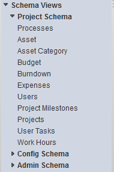

The Admin Schema appears in the schema sidebar and is accessible by users in the admin group. The Admin Schema provides access to types at the project and server level (e.g. users, groups, triggers and pipelines).
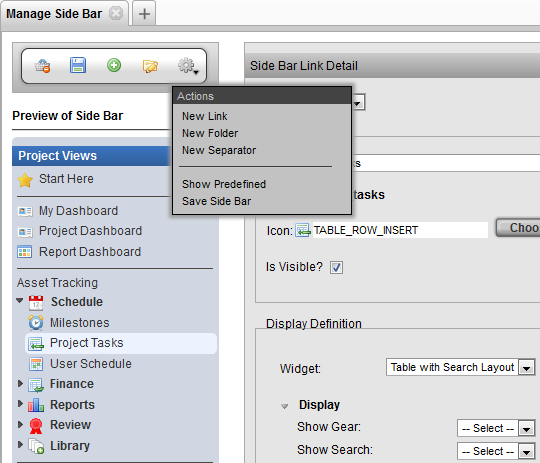
Introduction
The sidebar is a menu of views created by the administrator to present information on the items in TACTIC. Examples of views include: Asset Tracking, User Schedules, Milestones, Project Tasks, Expenses List, Budget, File Usage Report, Burndown Report, etc.
The tool to manage the sidebar can be found under:
Admin Views → Project Admin → Manage Sidebar
The Manage Side Bar view is divided into 3 panels:
- Tool Shelf - Quick links to access sidebar tools.
- Preview of Sidebar - Re-arrange the elements in the sidebar by dragging and dropping.
- Element detail - First, select a link from the preview of the Side Bar. Then, this panel allows for editing of the link element’s properties.
Preview of Side Bar
The Preview Side Bar panel allows for changes to be made and tested before committing to the actual sidebar. The following is a list of actions that can be carried out in the preview panel:
- Drag Links into folders
- Rearrange Links and Folders
- Rearrange separators
- Drag links and folders into the trash for removal
- Selection of a link or folder to edit the properties or security
Side Bar Link Detail
When editing the properties of a link, at the bottom of the Side Bar Link Detail panel are security settings. This section provides the opportunity to select which groups can see and the folder or the link. Changes to security to other users take effect when those users refresh their sidebar.
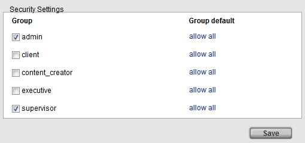
The security section provides a method of simplifying what is presented to team members of different user groups. The security settings behaves in a hierarchical manner. If a specific security is applied to a folder, its child links will inherit the same security setting. The security settings are applied at runtime (i.e. the child link does not have the security saved to it).
The Side Bar Link Detail panel allows for editing of Link properties in either simple or advanced mode.
After choosing the groups which should access a link, click the Save Definition to apply the security.
Note
The security configuration settings are saved as XML access rules and can be found under: Admin Views → Site Admin → Groups
Simple Mode
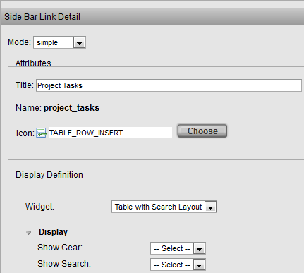
In simple mode, the following aspects can be edited:
- Title: The title of the Link.
Icon: An icon can be selected in the interface below by clicking the Choose Icon button
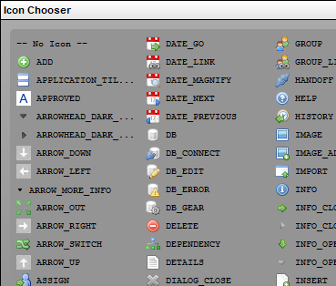
Advanced Mode
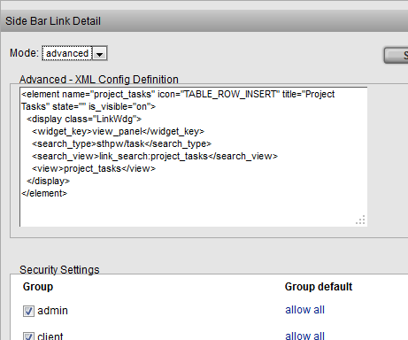
Advanced mode shows the raw XML used to configure the Link Element. The element is saved to the definition view for the sidebar.
Action Menu
The project views manager Action Menu provides links to tools for managing the sidebar.
New Entry
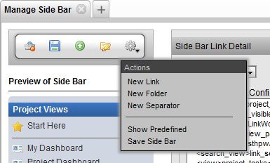
The Add new link option adds a new link to the sidebar which is linked to the default table view for the chosen Search Type
New Folder
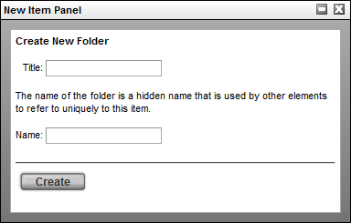
Adds a new folder to the sidebar. Items can be dragged into the new folder in the pop-up then saved or, Items can be dragged into the folder at anytime in the editor.
New Separator
Adds a new separator to the sidebar, these a can be used to further organize the folders and links
Add Predefined
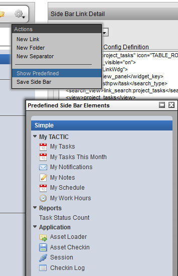
The predefined views are delivered as part of a project module. These predefined project can be utilized to expedite the setup process.
If the project is a custom (simple) project, only the My Tactic views will be available.
Save
Saves the current state of the Temp side bar. Clicking the save icon 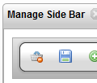will also save the state.
Element Definition Widget
Editing the configuration of widgets is an important part of configuring TACTIC. Widgets are drawing elements that display information on the TACTIC interface. Widgets can be configured for a wide variety of applications. The Element Definition Widget allows for the generic configuration of any widget using an easy to use interface directly in TACTIC.
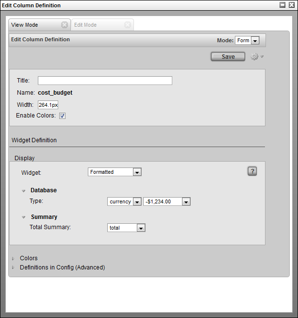
Accessing the Element Definition Widget
The Element Definition Widget can be used to edit existing widgets or to create entirely new ones. It can be accessed from a few locations. The common way to access the widget is by right clicking on the column header in the table. This will bring up the context menu:
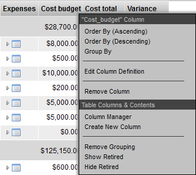
Selecting Edit Column Definition opens a pop-up with the appropriate data filled in for the selected element.
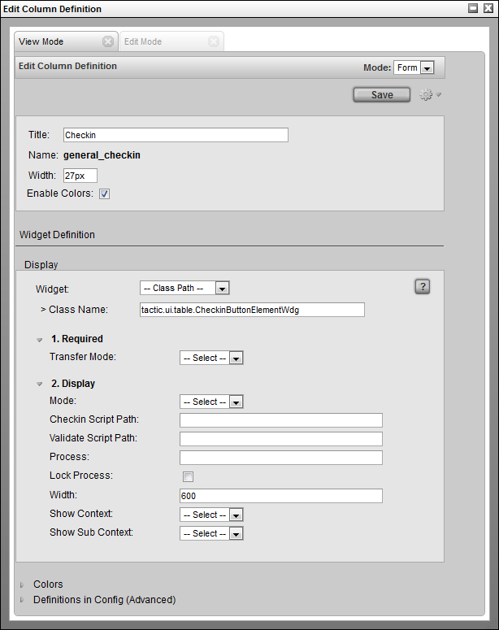
The "Create New Column" selection opens up an empty Element Definition pop-up so that new elements can be created.
Tool Bar
The tool bar can be found in the top right hand corner of this widget.
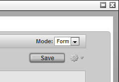
Mode: This can be set to either Form or XML. The Form selection is the default which displays the user interface for entering in attributes for this widget. The XML section is for advanced usage which allows direct control of the XML definition of the widget.
Save: This button will save the settings in the widget to the definition view.
Gear: Clicking on the gear menu will display a number of other options available as described in the next section.
Gear Menu
The gear menu contains a number of operations.
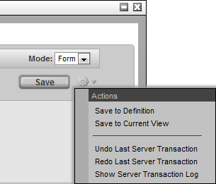
Save to Definition: This will save the current contents to the "definition" view. The definition view is a view where all widgets for a particular sType are defined.
Save to Current View: Occasionally, it is desirable to save a view definition in the current view. This means it will not be available to other views, so this option should only be used if it is completely specific to this view.
The next 3 are the standard Undo/Redo/Show Server Transaction Log menu options for convenience.
Widget Sections
The Element Definition Widget is broken into sections:
Attributes: These are generic attributes to describe the overall drawing of this element. All elements possess these same attributes:
- Title: The title to be displayed in the column header for this widget. If it is empty, then TACTIC will use the element Name for the title
- Name: The name of the column in the database (autogenerated based on the title when creating a new column)
- Width: The default width of the column
- Enable Colors: Enables the cell colors as set under the Colors section.
- Display: The display section defines the configuration of the widget that will be used to display data.
- Colors: Set the color for the cell for specific cell values.
- Definitions in Config (Advanced): This is an advanced display and typically used to find out where in the config hierarchy a particular element definition is located.
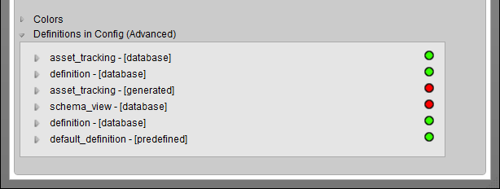
For those familiar with the widget config table, the underlying drawing mechanism does not change. XML defined widgets still drive the drawing engine, however, the Element Definition widget makes it much easier to create new elements and edit existing ones.
Display Section
Each element has uses a drawing widget which will determine how an element will draw itself. Each drawing widget contains a number of configuration attributes which alter the functionality of the widget. The attributes displayed depend on which widget is selected.
The following widgets are predefined in TACTIC and can be selected in the drop down.
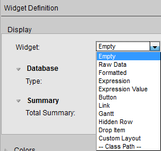
Empty | Specifies that no widget is to be used. |
Raw Data | Displays the data "as is" from the database. |
Formatted | Formats the display of the data. eg. -($1,234.00) |
Expression | Use a relative TACTIC Expression to calculate what to display for each item. One expression defines what to display for the entire column. |
Expression Value | Allow each item to be able to have an absolute TACTIC Expression to calculate what to display. If there is an expression specified, the resulting value will be displayed in the cell. |
Button | Display an icon button that runs a JavaScript action when clicked. |
Link | Create a hyperlink button. |
Gantt | Horizontal bar graph for dates. |
Hidden Row | Toggle button to open a hidden row where another widget (element) is displayed. For example a Table, Custom Layout, Edit Panel etc. |
Drop Item | Column where items from another view can be dropped. |
Custom Layout | Use HTML to specify what to display. Supports TACTIC Expressions and MAKO. |
-- Class Path -- | The path to a fully qualified Python class for a custom widget. |
Full descriptions of each widget can be found in the widget documentation.
When "-- Class Path --" is selected, the input field to specify the path to a fully qualified python class appears. Arbitrary python classes can be specified to create complete custom widgets that are seamlessly integrated into TACTIC. Refer to the developer section below for details on how TACTIC creates the widget element interface.
When a widget or class path is selected, the available configuration attributes will be dynamically loaded.
Each widget will define its own attributes that will configure what gets displayed.
Edit Mode Tab
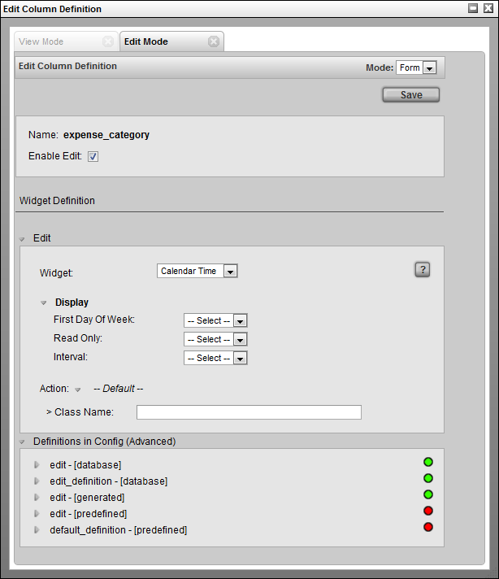
The edit section configures the edit-ability of this widget. It works very similarly to the display section except that the options are specific to edit inputs.
Edit Section
The widgets available here are:
--- | Specifies that no widget is to be used. |
Default | Use the default input widget. |
Text | Use the Text Widget as the input widget. |
Select | Create a drop down selection menu and specify the selection options as the input widget. |
Calendar | Use the Calendar Input Widget |
Calendar Time | Use the Calendar and Time Input Widget |
-- Class Path -- | The path to a fully qualified Python class to a custom input widget. |
Advanced
This section displays the various definitions of this widget.
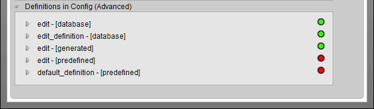